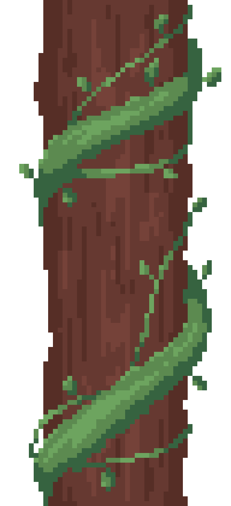
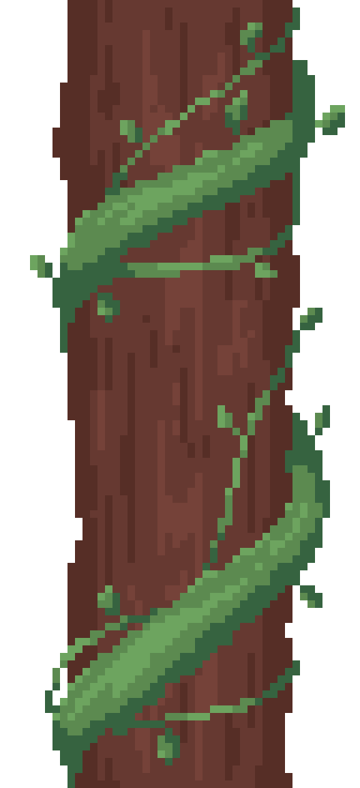
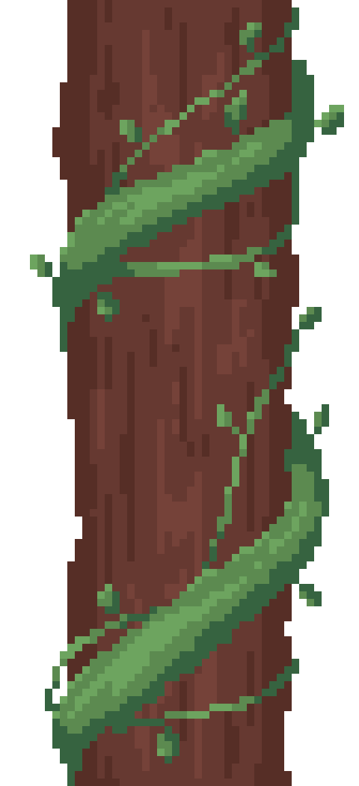

Ici vous retrouverez tous les points clés de l'avancée de notre jeu. Que ce soit des soutenances, techniques comme fonctionnelles, ou juste des points clés pour notre équipe, toutes les informations sont là !
